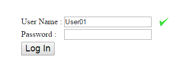

AJAX / XmlHttpRequest
Web-Programmierung
08.09.2015 - Martin Letzel
Kontakt: letzemrt@Schaeffler.com
AJAX
Asynchronous Javascript and XML
Asynchrone HTTP-Anfragen
Finden im Hintergrund statt während Besucher auf der Seite weiterlesen, Formulare ausfüllen o.ä.
Callback-Funktion liest die Serverantwort sobald sie vorliegt.
JavaScript
Das HTTP-Anfrageobjekt gehört zur allgemeinen JavaScript-Bibliothek
XML
Antwort kann verschachteltes XML und somit per DOM verarbeitbar sein

XMLHttpRequest
- Objekt
- Schnittstelle zur Kommunikation mit Server
- HTTP-Anfragen und Antworten vom Server
Erzeugen des Objektes
var xmlHttpObject = false;
// Überprüfen ob Klasse vorhanden ist + Erzeugen von Objekte für Browser
if (typeof XMLHttpRequest != 'undefined')
{
xmlHttpObject = new XMLHttpRequest();
}readyState
- 0: Nicht initialisiert
- 1: Objekt ist bereit, keine Daten gesendet
- 2: Anfrage wurde gesendet
- 3: Daten werden empfangen (onreadystatechange wird evtl. mehrmals aufgerufen)
- 4: Alle Daten wurden empfangen
Beispiel: "Benutzername vorhanden?"

Beispiel - "Benutzername vorhanden?"
Quellen
- www.webmasterpro.de
- www.w3school.com
- IT-Handbuch für Fachinformatiker - Rheinwerk Verlag